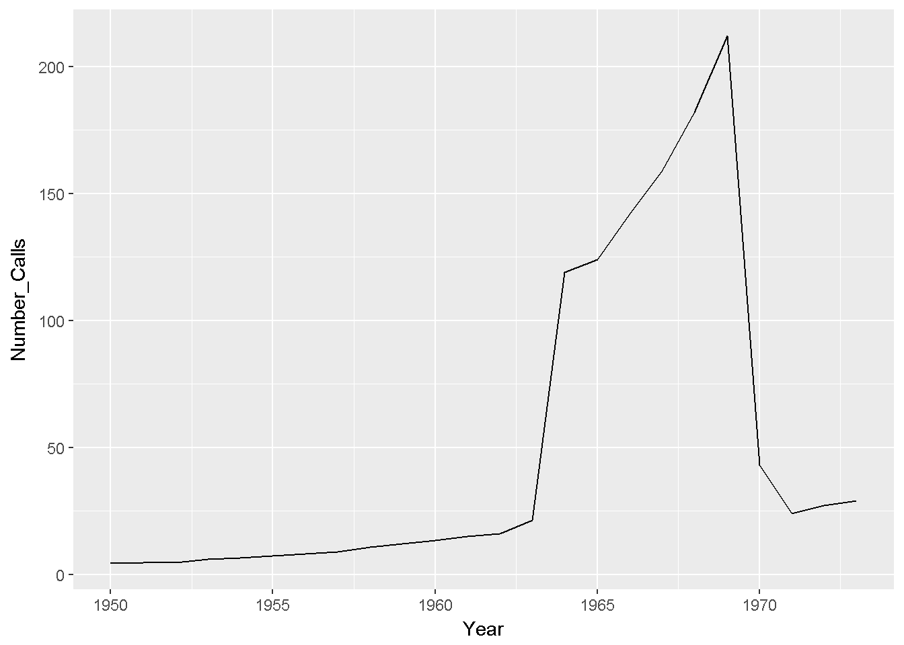
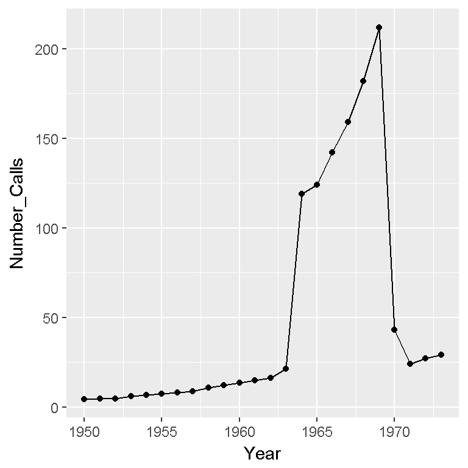
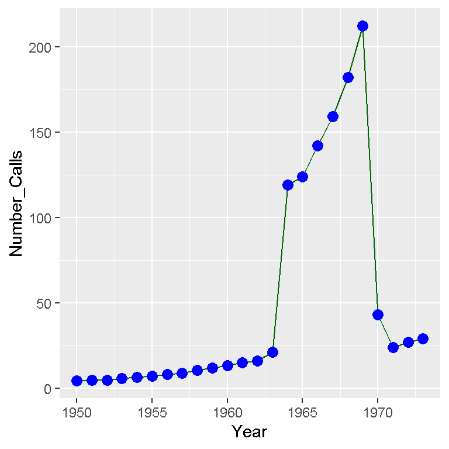
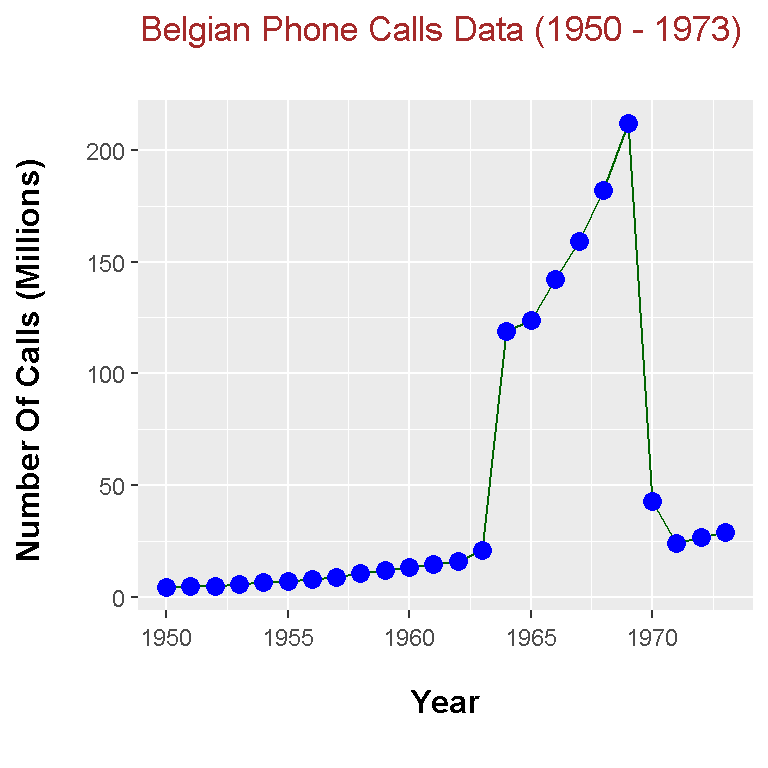

Line Plots In R And ggplot2
Hi. Here is some work that I have done with line plots in R and ggplot2.
Table Of Contents
Belgian Phone Calls Data
The dataset that I have chosen for this is on Belgian phone calls data from 1950 to 1973. The R documentation in the MASS library has this information about this dataset.

To start, load the libraries MASS and ggplot2.
# Line Plots In R
# Reference: R Graphics Cookbook by Winston Chang (2012)
library(MASS) # Dataset library
library(ggplot2) # Data visualization
From the MASS dataset library, there is a dataset called phones. This phones data is saved into a variable called belgium_phonecalls.
# Belgium Phone Calls Data:
belgium_phonecalls <- data.frame(phones)
The head() and tail() functions are used to look at a small sample of the data.
# Preview the data:
head(belgium_phonecalls); tail(belgium_phonecalls)## year calls
## 1 50 4.4
## 2 51 4.7
## 3 52 4.7
## 4 53 5.9
## 5 54 6.6
## 6 55 7.3## year calls
## 19 68 182
## 20 69 212
## 21 70 43
## 22 71 24
## 23 72 27
## 24 73 29
I do not like the year values with the last digits only. Adding 1900 to the first column would be ideal here. Also, I rename the column names using colnames().
# Add 1900 to the year column:
belgium_phonecalls[, 1] <- 1900 + belgium_phonecalls[, 1]
# Rename column names:
colnames(belgium_phonecalls) <- c("Year", "Number_Calls")
# Preview the data again:
head(belgium_phonecalls); tail(belgium_phonecalls)## Year Number_Calls
## 1 1950 4.4
## 2 1951 4.7
## 3 1952 4.7
## 4 1953 5.9
## 5 1954 6.6
## 6 1955 7.3## Year Number_Calls
## 19 1968 182
## 20 1969 212
## 21 1970 43
## 22 1971 24
## 23 1972 27
## 24 1973 29
A Simple Line Plot
Using the ggplot2 package in R, a simple line plot can be created from our data table.
## Simple Line Plot:
plot <- ggplot(belgium_phonecalls, aes(x = Year, y = Number_Calls))
plot + geom_line()
One can easily see that the number of phone calls (in millions) has increased dramatically starting at around 1963 to about 1968. Someone with domain knowledge of Belgium and the phone industry would likely know what contributed to the increase and decrease number of phone calls from around 1963 to 1970.
Some Variations Of The Line Plot
The neat thing about ggplot2 in R is that it provides more variety and more choice for the R user/programmer. Here are some variations of the line plot.
If I want to add data points with the line, I simply add geom_point with geom_line() on top of the ggplot() function saved in plot.
## Adding dots with the line:
plot + geom_line() + geom_point()
The points above are somewhat small and the colour could be changed. Here is a different version of the above.
## Coloured dots and coloured line:
plot + geom_line(colour = "darkgreen") +
geom_point(colour = "blue", shape = 21, size = 3, fill = "blue")
The line colour has been changed to dark green and the points have a different size, shape and are now blue.
To make the plot more complete, labels and other features need to be added. Here is the code and output.
## A polished line plot with labels:
plot + geom_line(colour = "darkgreen") +
geom_point(colour = "blue", shape = 21, size = 3, fill = "blue") +
labs(x = "\n Year \n", y = "Number Of Calls (Millions) \n",
title = "Belgian Phone Calls Data (1950 - 1973) \n") +
theme(plot.title = element_text(hjust = 0.5, colour = "brown"),
axis.title.x = element_text(face="bold", size = 12),
axis.title.y = element_text(face="bold", size = 12),
axis.text.x = element_text(vjust = 0.2),
legend.title = element_text(face="bold", size = 10)) 
References
R Graphics Cookbook by Winston Chang (2012)
R Documentation in the faraway package.